Syllabus & Marks Distribution
| Detail | Information |
|---|---|
| Course | Seismic Resistant Design of Masonry Structures — ENCE 367 (Elective I) |
| Chapter | 6 — Repair and Strengthening Methods for Existing Masonry Buildings |
| Teaching Hours | 4 hours — the shortest chapter |
| Marks Allocation | 6 marks in the 60-mark final |
| Total Course Marks | 60 marks (final exam) · 45 teaching hours |
| Weight | 10% of the final paper |
| Codes & references | IS 4326–1993, IS 13935, NBC 105: 2020, NBC 202, FEMA 154 / 306 / 356, ATC-20/45, UN-HABITAT toolkit, DUDBC retrofitting guidelines |
Syllabus Topics
- 6.1 Basic concept of repair, rehabilitation and retrofitting
- 6.2 Vulnerability assessment and methods
- 6.3 Retrofitting materials
- 6.4 Retrofitting techniques and various methods/approaches for masonry structures based on failure mechanism
- 6.5 Existing retrofitting practice of masonry structures in Nepal
- 6.6 Existing retrofitting practice in Nepal
Importance & Frequently Asked Topics MEDIUM–HIGH
A small chapter that reliably yields one short theory question every year. It is the cheapest chapter in the syllabus per mark: four hours of teaching, no numericals, and the questions are almost always the same three — define repair / restoration / retrofitting, explain the retrofitting strategy or steps, and describe the strengthening procedure for damaged masonry buildings. Learn §6.1 and §6.4 thoroughly and you have the chapter.
Marks Distribution by Each Exam
| Exam | Marks | Questions asked |
|---|---|---|
| 2075 Chaitra | — | Not asked directly |
| 2076 Chaitra | 10 | Q3a — failure mechanism of masonry structures and remedial measures (shared with Ch 3) |
| 2078 Bhadra | — | Not asked directly |
| 2079 Bhadra | 8 | Q3a — define repair, restoration and retrofitting [4]; Q4a — steps involved in retrofitting strategies [4] |
| 2080 Bhadra | 12 | Q1b — failure mechanism and mitigation measures with sketches |
| 2081 Bhadra | 8 | Q2b — explain the strengthening procedure for damaged masonry buildings |
Most Frequently Asked Topics
| Topic | Times asked | Frequency |
|---|---|---|
| Strengthening / retrofitting procedure for damaged masonry (§6.4) | 3 | |
| Repair vs restoration vs retrofitting — definitions (§6.1) | 2 | |
| Steps in the retrofitting strategy (§6.1.4) | 2 | |
| Remedial / mitigation measures keyed to the failure mechanism (§6.4.5) | 2 | |
| Vulnerability assessment methods (§6.2) | 1 |
Topic-wise Importance
| Section | Topic | Importance |
|---|---|---|
| 6.1 | Repair, rehabilitation and retrofitting — definitions and the retrofit process | Very High |
| 6.2 | Vulnerability assessment — phases, tools, NDT | Medium |
| 6.3 | Retrofitting materials | Medium |
| 6.4 | Retrofitting techniques keyed to the failure mechanism | Very High |
| 6.5–6.6 | Existing retrofitting practice in Nepal | Medium |
6.1 Basic Concept of Repair, Rehabilitation and Retrofitting
- Define repair, restoration, and retrofitting. 2079 Bhadra · Q3a [4 marks]
- What are the steps involved in retrofitting strategies? 2079 Bhadra · Q4a [4 marks]
6.1.1 The three terms
| Term | Definition | Aim & typical work |
|---|---|---|
| Repair (cosmetic repair) |
Cosmetic and functional works carried out on a damaged building to bring it back to a usable condition, without altering its structural strength. | Aim: restore serviceability and appearance only. Work: patching and re-plastering, filling fine cracks, repairing doors, windows, wiring and plumbing, whitewashing, rebuilding non-structural partitions, re-fixing roof tiles. It improves only the visual appearance and adds no strength. It may also restore the non-structural properties (weather-tightness, fire rating). |
| Restoration (rehabilitation, structural repair) |
Structural works that bring the damaged building back to its original strength — the condition it was in before the earthquake. | Aim: recover the lost strength and stiffness. Work: grouting and injection of cracks, stitching of wide cracks with dowels, re-pointing eroded joints, dismantling and rebuilding shattered portions, replacing damaged lintels. No more than the original capacity is provided. |
| Retrofitting (seismic strengthening, structural enhancement) |
Structural works that upgrade the building beyond its original strength, so that it can resist a future earthquake better than it resisted the last one. | Aim: increase strength, stiffness, ductility and integrity to meet current code requirements. Work: adding horizontal bands and vertical bars, splint-and-bandage, wire-mesh / ferrocement or FRP jacketing, through-stones, corner stitching, stiffening the diaphragm, reducing openings, lightening the roof, adding buttresses or shear walls. Applied to undamaged buildings too. |
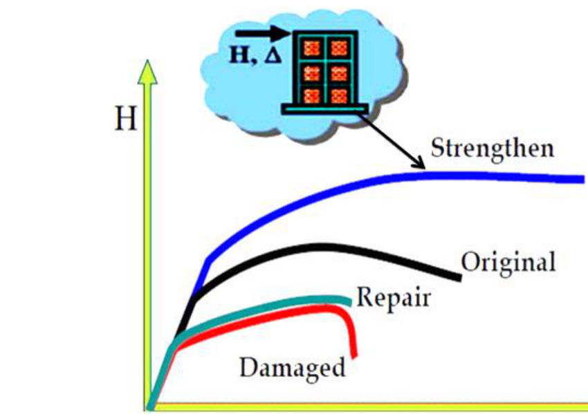
Repair → it looks better. Restoration → it is as strong as it was. Retrofitting → it is stronger than it ever was.
6.1.2 Principles of seismic safety of masonry buildings
Every retrofitting intervention is aimed at restoring one of these five things — state them before you list any technique:
- Integral box action — the whole building must respond as one closed box, not as a set of independent walls.
- Integrity of the various components.
- Roof-to-wall connection.
- Wall-to-wall connection at the corners and junctions.
- Wall-to-foundation connection.
- Limit on openings — size, number and position.
6.1.3 Why retrofitting is needed
A building may require retrofitting for any of the following reasons:
- Codal requirement — to meet the prescribed requirements of NBC 105 and other relevant codes, which have been revised since the building was built.
- Change in use — for example converting a residential building into a school, which raises the importance factor I.
- Functional change — a large conference room is wanted, or additional floors are to be added that were not in the original design.
- Upgrading the performance of the building generally.
- After damage — the building has been shaken and must be made safe against the next event.
6.1.4 Steps in the retrofitting strategy
- Realisation of the retrofit requirement. Establish why the building is to be retrofitted (the five reasons in §6.1.3). This governs everything that follows.
- Selection of the engineer / architect. Retrofitting needs competence beyond ordinary structural practice, so a competitive selection process should be followed; otherwise consult the municipality.
- Notification to the municipality or concerned authority. The owner gives preliminary notice stating the purpose and obtains a go-ahead.
- Establish the performance objectives. In consultation with the owner and the relevant code, fix the target — typically: no damage under a minor (frequent) earthquake, no significant structural damage under the design basis earthquake (DBE), and no collapse under the maximum considered earthquake (MCE).
- Review the existing condition of the building. Age, design code (if any), present condition, change of use, neighbouring buildings and facilities, availability of drawings, geotechnical report, and the intended future use.
- Carry out the vulnerability evaluation — from preliminary visual screening through to detailed evaluation and material testing (§6.2). This identifies the deficiencies.
- Preliminary design with cost estimate, and a feasibility decision. Decide whether to retrofit at all, or to demolish and rebuild. Economics alone is not the only criterion — a heritage building may be retrofitted even when the economics do not justify it.
- Detailed design according to the retrofitting guideline appropriate to that building type.
- Prepare construction documents and a quality assurance plan, including the construction sequence. These form the basis for selecting the contractor.
- Submit to the authority for approval; the authority may send the design for peer review.
- Monitor construction and implement quality control. Any change dictated by ground conditions must be made by the engineer and approved by the authority before proceeding.
- Post-retrofit evaluation to confirm the adequacy and effectiveness of the intervention.
6.1.5 Three generic categories of intervention
For earthquake-damaged concrete and masonry wall buildings the whole field reduces to three categories:
| Category | What it does | Strength after |
|---|---|---|
| Cosmetic repairs | Appearance and non-structural properties only | Unchanged (still damaged) |
| Structural repairs or restoration | Recovers the lost capacity | = original |
| Structural enhancement / retrofitting | Upgrades the capacity | > original |
6.2 Vulnerability Assessment and Methods
Assessment is done twice: before the retrofitting, to identify the deficiency; and after the retrofitting, to estimate the adequacy and effectiveness of what was done.
6.2.1 What a seismic evaluation considers
- Earthquake intensity expected at the site
- Structural configuration and components
- Structural condition (existing cracks, decay, past interventions)
- Geological condition
- Foundation capability
- Non-structural components
6.2.2 The three phases of seismic evaluation
| Phase | What is done | Effort |
|---|---|---|
| 1. Screening phase | Rapid visual screening — a “sidewalk survey” from outside the building, filling a standard data-collection form. Used to sort a large stock of buildings quickly. | Minutes per building |
| 2. Evaluation phase | Qualitative building assessment: walk-through, simple measurements, checking compliance with the code's earthquake-resistant features, a preliminary structural check. | Hours per building |
| 3. Detailed evaluation phase | Full structural analysis with material testing (NDT and partially destructive), soil investigation and measured drawings. Only carried out on buildings that fail the earlier phases. | Weeks per building |
6.2.3 Common earthquake vulnerability assessment tools
| Tool | Aim | Method & output |
|---|---|---|
| 1. UN-HABITAT toolkit | (a) Multi-hazard vulnerability assessment — earthquake, wind, flood and fire; (b) condition (maintenance need) assessment | Visual inspection, simple measurements and a checklist covering the planning, architectural and structural aspects of the building for each hazard. Output is a Compliance Index; the critical value is 0.75 — if the Compliance Index is below 0.75, a detailed assessment of the building is required. |
| 2. G.N.D.T. vulnerability sheet (Italian National Group for Defence against Earthquakes) |
To evaluate the damage grade of the building | Based on 11 parameters, each scored into class A, B, C or D with a weight. The scores combine into an absolute vulnerability index Iv, which is then mapped to a damage grade. |
| 3. FEMA 154 (Rapid Visual Screening) |
To identify: (1) older buildings designed and built before adequate seismic requirements were adopted; (2) buildings on soft or poor soils; (3) buildings whose performance characteristics negatively influence their seismic response | A “sidewalk survey” plus a data-collection form. A basic structural hazard score is modified by score modifiers (height, irregularity, code era, soil type) to give a final score S; a low S means detailed evaluation is required. |
The 11 GNDT parameters — worth listing in full
| 1. Type and organisation of the structural system | 7. Elevation layout |
| 2. Quality of the structural system | 8. Maximum distance between walls |
| 3. Notional strength | 9. Roof |
| 4. Building location and foundation | 10. Non-structural elements |
| 5. Floors | 11. Physical condition |
| 6. Plan layout |
6.2.4 Detailed investigation — NDT and partially destructive testing
Once weak zones have been identified, the in-situ quality of the material must be measured.
| Type | Test | Principle / what it gives |
|---|---|---|
| Non-destructive (NDT) |
Rebound hammer (Schmidt hammer) | A spring-driven mass strikes the surface; the rebound number correlates with surface hardness and hence compressive strength. Take 15 readings on a face; discard the highest and lowest and average the rest. |
| Ultrasonic pulse velocity (UPV) | Measures the velocity of an ultrasonic pulse through the member, giving the dynamic modulus of elasticity and revealing internal voids, honeycombing and cracks. | |
| Rebar locator / profometer | Electromagnetic detection of the position, diameter and cover of the reinforcement without breaking the member. | |
| Partially destructive |
Core test | A cylindrical core is cut out, allowing visual inspection of the interior and a direct measurement of compressive strength. The most reliable test. |
| Penetration resistance (Windsor probe) | A standardised bolt is fired into the material by an explosive charge; the depth of penetration correlates with strength. | |
| Pull-off / pull-out test | Measures the in-situ tensile strength, from which compressive strength is inferred. | |
| Steel and soil sampling | Bar samples for tensile strength and other properties; chemical analysis for carbonation and chloride content to assess corrosion; soil profiles classified as rocky, very dense soil and soft rock, stiff, or soft. |
6.3 Retrofitting Materials
| Material | Where used | Notes |
|---|---|---|
| Cement grout (1:1 cement–water, or polymeric mortar) | Injection into cracks and into the voids of multi-leaf walls | Injected at low pressure, 0.1–0.25 MPa. The pressure can be obtained simply by gravity flow from a super-elevated tank. |
| Cement mortar / micro-concrete | The 20–40 mm rendering over wire mesh in jacketing | Applied in two layers over the mesh. |
| Welded wire mesh (galvanised) | Splint-and-bandage, seismic belts, ferrocement jacketing | Typical elementary mesh 50 × 50 mm; must be galvanised and provided continuously, with a minimum 300 mm overlap at splices. |
| Reinforcing bars (MS / HYSD) | Vertical containment reinforcement, crack stitching, sewing of walls, RC bands, jacketing | Typically 8–12 mm; 10 mm bars in 20 mm diameter drilled holes filled with cement grout for wall sewing. |
| Reinforced concrete (M15 and above) | Bands, jacketing, new shear walls, buttresses, foundation strengthening | The workhorse material of Nepali retrofitting practice. |
| Steel sections, flats, ties and turnbuckles | Prestressing rods, floor–wall connections, bracing, anchor plates | Steel rods on the two faces of a wall tensioned by turnbuckles is the easiest way to apply pre-compression. |
| Through-stones / bonding elements | Multi-leaf stone walls | Where original through-stones are absent, S-shaped or hooked steel ties are substituted. |
| Fibre-reinforced polymer (FRP) — advanced composites | Surface bonding to walls, beams, columns and joints | See the box below — the modern option. |
| Epoxy resins and polymer mortars | Crack injection, bonding new to old concrete, FRP saturation | High bond strength; needed to saturate the FRP fabric. |
| Timber | Diaphragm stiffening, temporary shoring, traditional buildings | Light, and compatible with historic construction. |
The latest technique in structural rehabilitation. An ACS comprises a uni-directional or bi-directional woven reinforcing fabric saturated with a specially formulated epoxy matrix. Its advantages:
• Quick and easy application → saves time and cost
• Flexible application — suits a member of any shape or profile
• Causes no destruction or disturbance to the existing concrete or masonry
• Can be used in space-constrained areas; no heavy machinery or equipment needed
• Light weight — no distress to the member being strengthened
• Increases strength and ductility; enhances axial, shear, flexural and tensile capacity
• No appreciable increase in member size or dead load
• Does not corrode, and inhibits further corrosion
6.4 Retrofitting Techniques Based on Failure Mechanism
- Explain the strengthening procedure for the damaged masonry buildings. 2081 Bhadra · Q2b [8 marks]
- Describe the failure mechanism of masonry building during earthquake and suggest its mitigation measures to make it earthquake resistant, with sketches. 2080 Bhadra · Q1b [12 marks]
- Discuss in brief the failure mechanism of masonry structures and remedial measures. 2076 Chaitra · Q3a [10 marks]
6.4.1 The two strategies
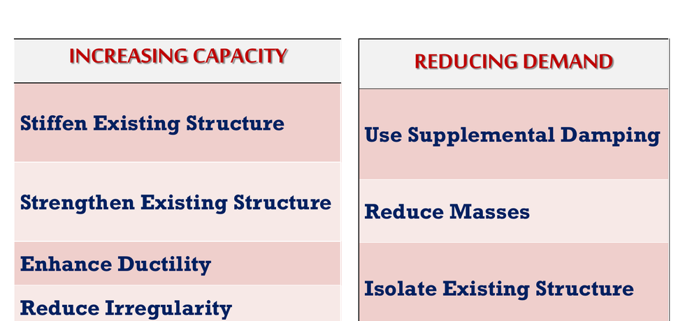
| Strategy 1 — INCREASING THE CAPACITY | Strategy 2 — REDUCING THE DEMAND |
|---|---|
| Stiffen the existing structure | Use supplemental damping |
| Strengthen the existing structure | Reduce masses (lighten the roof, remove a storey) |
| Enhance ductility | Isolate the existing structure (base isolation) |
| Add braced frames, shear walls, buttresses or similar elements — this increases both stiffness and strength | Reduce irregularity (plan and elevation) |
There is also a third, managerial, layer of strategies that is not structural at all but is often the right answer: occupancy change, demolition, temporary retrofit, phased retrofit, retrofit during occupancy vs retrofit of a vacant building, and interior vs exterior retrofit.
6.4.2 Classification of retrofitting techniques
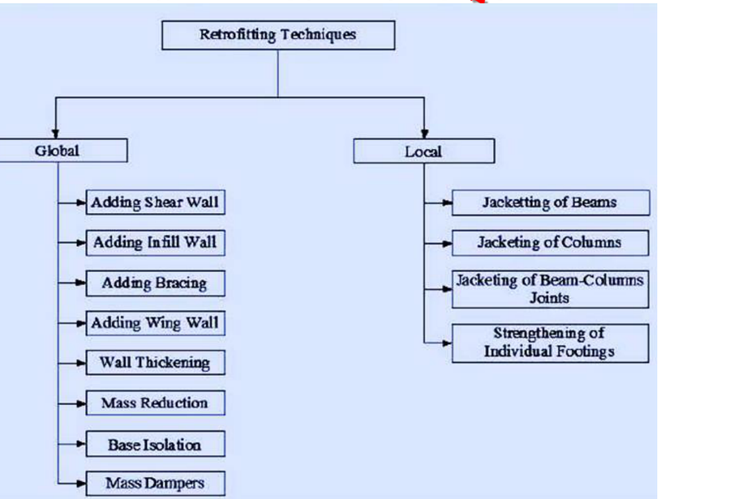
| GLOBAL methods | LOCAL methods |
|---|---|
| Adding shear wall · Adding infill wall · Adding bracing · Adding wing wall · Wall thickening · Mass reduction · Base isolation · Mass dampers | Jacketing of beams · Jacketing of columns · Jacketing of beam–column joints · Strengthening of individual footings |
6.4.3 Strengthening existing walls
The lateral strength of a building can be improved by increasing the strength and stiffness of the individual walls, whether they are cracked or uncracked. There are four methods:
(A) Grouting
- A number of holes are drilled in the wall — roughly one hole per 2 to 4 m².
- Water is injected first, to wash the inside of the wall and improve the cohesion between the grout and the wall elements.
- A cement–water mixture (1:1) is then grouted at low pressure (0.1–0.25 MPa), starting from the lowest holes and working upwards. Polymeric mortars may be used instead.
The increase in shear strength achieved this way is considerable. However, grouting cannot be relied on to improve the connection between orthogonal walls — that needs a different technique. The pressure can be obtained by gravity flow from a super-elevated tank.
(B) Wire-mesh jacketing (ferrocement / RC covering on both faces)
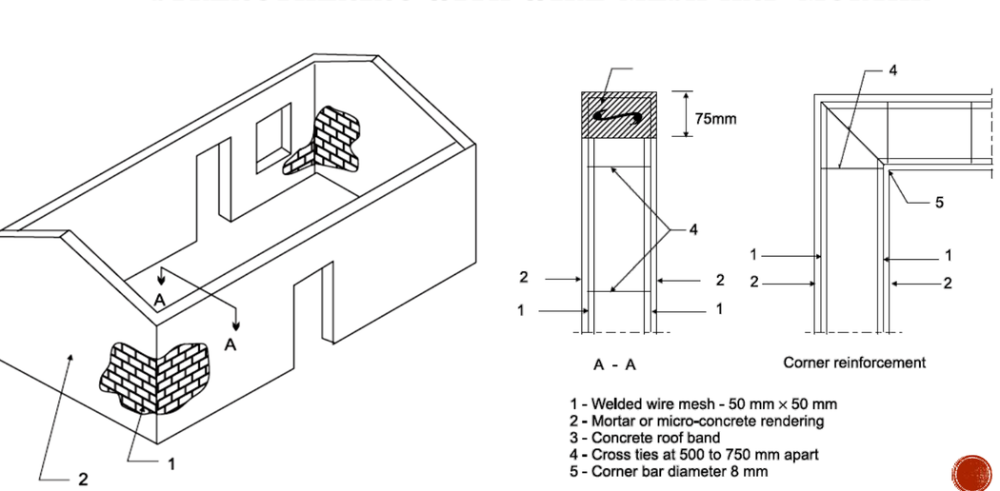
This system can also be used to improve the connection of orthogonal walls — which grouting cannot do.
(C) Connection between existing stone walls — “sewing”
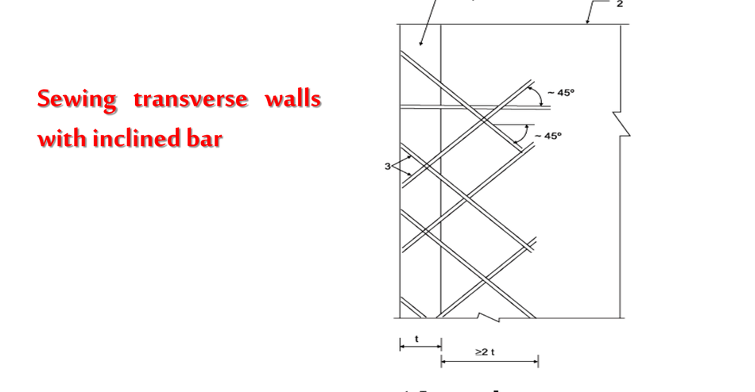
In stone buildings of historic importance, consisting of fully dressed stone masonry in good mortar, effective sewing of perpendicular walls can be done by drilling inclined holes through them, inserting steel rods and injecting cement grout. This restores the wall-to-wall connection without disturbing the appearance — important for heritage structures.
(D) Pre-stressing the walls
- A horizontal compression state induced by horizontal tendons increases the shear strength of the walls (recall τper = 0.1 + fd/6 — precompression directly buys shear capacity).
- It also considerably improves the connection of orthogonal walls.
- The easiest way is to place two steel rods on the two sides of the wall and tension them with turnbuckles, against anchor plates.
- Only a slight pre-stress is needed — about 0.1 MPa on the vertical section of the wall gives good effects.
- Pre-stressing is also useful to strengthen the spandrel between two rows of openings where no rigid slab exists.
6.4.4 Restoring integral box action
Splint and bandage — the Nepali standard
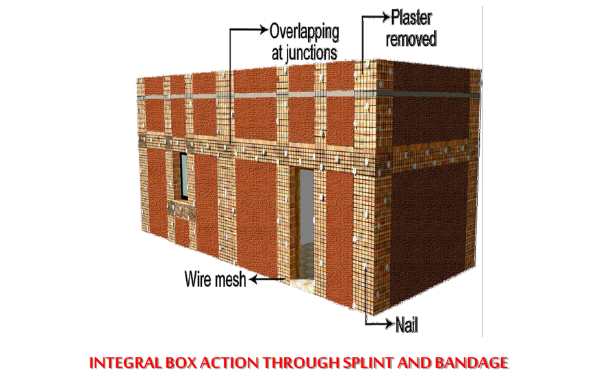
This is the single most widely used masonry retrofitting technique in Nepal. The wall is stripped of plaster, wire mesh strips are nailed on in the pattern of vertical splints and horizontal bandages, they are overlapped and tied at every junction, and the whole is rendered in cement mortar. It reproduces, on an existing building, exactly the bands and vertical bars that IS 4326 requires in a new one.
Horizontal and vertical seismic belts
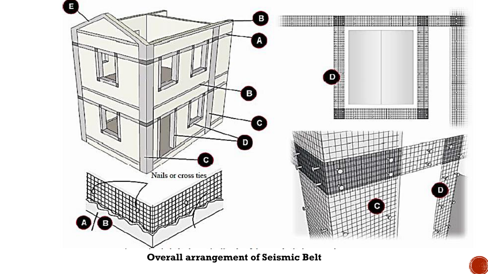
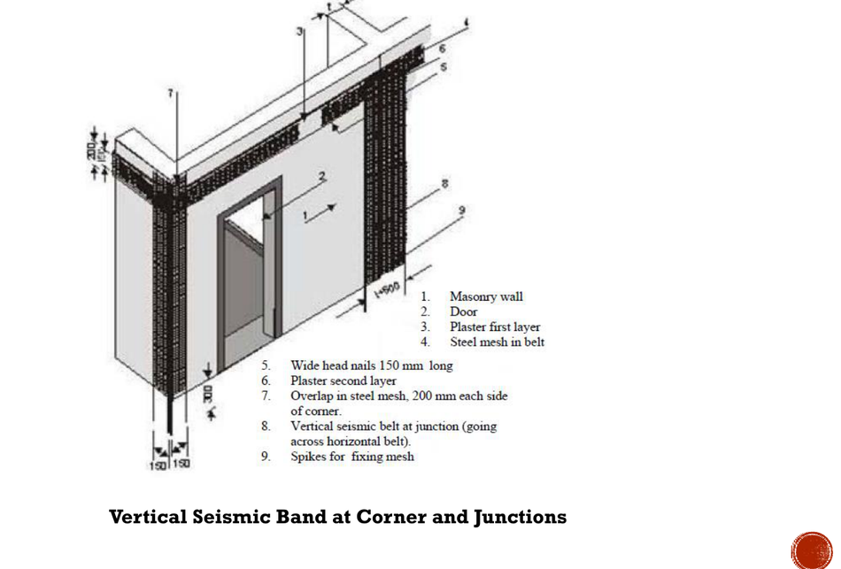
| Seismic belt locations — the rules | |
|---|---|
| 1 | Belts are provided on all walls, on both faces, just above the lintels of door and window openings and below the floor or roof. On small wall lengths in a room (less than 4 m) a belt on the outside face alone will suffice. |
| 2 | The roof belt may be omitted if the roof or floor is an RCC slab — the slab already does the job. |
| 3 | A belt is not necessary at plinth level unless the plinth height exceeds 900 mm. |
| 4 | Install a similar belt at the eave level of a sloping roof and near the top of the gable wall, below the roof. If the height of the eave level above the top of the door is less than 900 mm, only the eave-level belt need be provided and the lintel-level belt may be omitted. |
| 5 | Use galvanised welded steel wire mesh as reinforcement everywhere. The mesh must be continuous; where splicing is unavoidable there must be a minimum overlap of 300 mm. |
| 6 | Example sizing (seismic zone IV, room length 6 m): MW 21 weld mesh — 5 longitudinal wires of 4.5 mm diameter at 75 mm spacing, cross wires of 3.15 mm diameter at 300 mm spacing — with the belt height kept at 375 mm. |
Containment reinforcement
It should always be accompanied by horizontal RC bands — vertical steel alone does not make a box.
Connection of floor with wall, and crack stitching
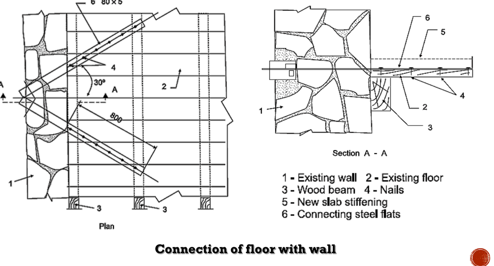
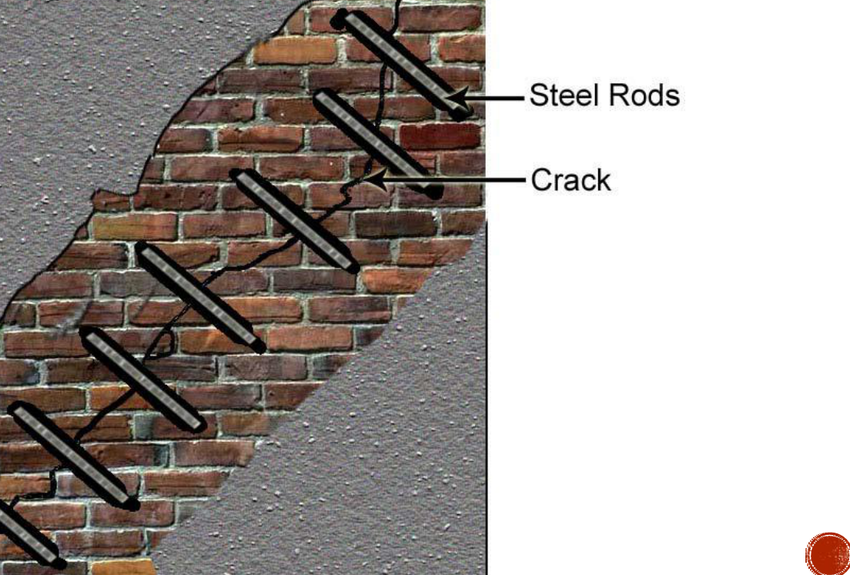
Buttresses, jacketing and foundation strengthening
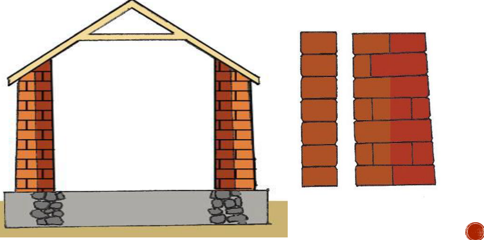
Other techniques covered in the course: jacketing of brick masonry posts and columns (an added RC section with new longitudinal bars and new tie bars around the existing section); RC jacketing of beams and beam–column joints with added stirrups, added reinforcement and welded connecting bars; strengthening of foundations; and vertical bars at inside corners.
6.4.5 Technique keyed to the failure mechanism — the table that answers the exam
| Failure mechanism | Cause | Retrofitting technique that prevents it |
|---|---|---|
| Out-of-plane overturning of walls (the dominant killer) | No connection to the floor/roof; no bands; slender wall; flexible diaphragm | Horizontal seismic belts / bands at lintel and eave level; anchor the roof and floor to the walls; add cross walls or buttresses to reduce the span; stiffen the diaphragm |
| Corner separation and vertical cracking at wall junctions | Poor interlocking of courses; walls built at different times | Vertical seismic belts at L and T junctions; splint and bandage; sewing with inclined bars; containment reinforcement at every corner |
| Delamination of multi-leaf stone or rubble walls | Two independent leaves with a rubble core; no cross ties | Grout injection; through-stones or S-shaped ties; wire-mesh jacketing on both faces with cross ties at 500–750 mm |
| In-plane diagonal (X) shear cracking of piers | Storey shear exceeds the diagonal tensile strength; weak mortar; low precompression | Grouting (raises shear strength considerably); ferrocement / wire-mesh jacketing; pre-stressing (0.1 MPa); reduce openings; add shear walls |
| Cracking at openings | Openings too large, too close to a corner, or unbanded | Belts around doors and windows (type D); vertical containment reinforcement next to the jambs; infill oversized openings |
| Gable and parapet collapse | Free-standing cantilever with no top restraint | Belt around the gable wall (type E) tied to the eave-level belt; reduce the parapet height |
| Roof / floor separation | Joists simply resting on the wall; heavy roof | Connection of floor with wall using wood beams, nails and connecting steel flats (Fig. 6.9); brace the roof; replace a heavy roof with a light CGI roof (this reduces the demand) |
| Existing wide cracks | Previous earthquake damage | Stitching with steel rods across the crack; grout injection for fine cracks; dismantle and rebuild where shattered |
| Sliding at the DPC / base | Smooth slip plane, low friction | Dowels across the joint; pre-stressing to add clamping force |
| Soft storey / torsion / irregularity | Open ground storey; asymmetric plan | Add shear walls, infill walls, wing walls or bracing (global methods); reduce irregularity; this is demand reduction as much as capacity increase |
| Foundation failure / settlement | Weak soil, inadequate footing | Strengthening of individual footings; underpinning; continuous plinth band |
- State the objective — restore integral box action, and the integrity of the roof-to-wall, wall-to-wall and wall-to-foundation connections.
- Assess first — identify the deficiency by vulnerability evaluation (§6.2) before choosing any technique.
- Distinguish repair / restoration / retrofitting and say which you are doing; draw Fig. 6.1.
- Give the two strategies — increase capacity, reduce demand — and the global vs local classification.
- Then list the techniques with a sketch each: grouting; wire-mesh jacketing; sewing of orthogonal walls; pre-stressing; splint and bandage; horizontal and vertical seismic belts; containment reinforcement; crack stitching; floor-to-wall connection; buttresses; jacketing; foundation strengthening.
- Close with the sequence and quality control — shore first, work element by element, never dismantle all supports at once, and re-evaluate afterwards.
6.5–6.6 Existing Retrofitting Practice in Nepal
6.5.1 The scale of the problem
- About 500,000 houses were damaged in the 2015 Gorkha earthquake.
- 85–90% of them were masonry houses — stone masonry, block masonry and brick masonry.
- Masonry houses are very vulnerable to earthquakes, and the great majority of Nepal's building stock is non-engineered masonry built without any code.
- The practical question is therefore “where do we start?” — and the honest answer is that there is no standardised procedure and no single code; the treatment differs from structure to structure.
6.5.2 What is actually done in Nepal
| Practice | Where it is applied |
|---|---|
| Splint and bandage with galvanised wire mesh and cement plaster | The default technique for load-bearing brick and stone masonry houses, and for school retrofitting programmes. Cheap, uses local labour, and needs no heavy plant. |
| Horizontal and vertical seismic belts | Applied to residential and public buildings following the belt-location rules of §6.4.4. |
| Containment reinforcement with horizontal RC bands | Where a more permanent, hidden solution is wanted; bars set in 30 mm grooves at 1 m spacing. |
| Through-stones and grout injection | Stone-in-mud houses in the hill districts — the most vulnerable class of all. |
| RC jacketing and added shear walls | Engineered RC buildings, hospitals and larger public buildings. |
| Corner stitching and crack grouting | Post-Gorkha restoration of damaged but repairable buildings. |
| Timber/steel diaphragm stiffening and roof anchoring | Traditional Newari buildings and heritage structures in the Kathmandu Valley. |
6.5.3 The institutional framework
- NBC 105: 2020 (seismic design), NBC 202 (mandatory rules of thumb for load-bearing masonry) and NBC 203 (low-strength masonry) set the target that a retrofitted building must reach.
- IS 4326–1993 (earthquake-resistant design and construction) and IS 13935 (repair and seismic strengthening of buildings) supply the detailing.
- The DUDBC retrofitting design guidelines and catalogues, prepared after 2015, give building-type-specific solutions.
- NSET and UN-HABITAT programmes have driven the school-retrofitting and public-awareness efforts, and produced the vulnerability assessment toolkits used in practice.
- Retrofitting design must be submitted to the municipality, which may require a peer review before approval — the same route as a new building permit.
Quick Revision
| Item | Value / rule |
|---|---|
| Repair / Restoration / Retrofitting | Looks better / as strong as it was / stronger than it ever was |
| Three generic categories | Cosmetic repair · structural repair or restoration · structural enhancement (retrofitting) |
| Principles of seismic safety | Integral box action; integrity of components; roof-to-wall; wall-to-wall; wall-to-foundation; limit on openings |
| Two strategies | Increase capacity (stiffen, strengthen, enhance ductility) · reduce demand (damping, reduce mass, base isolation, reduce irregularity) |
| Classification | Global (shear wall, infill, bracing, wing wall, wall thickening, mass reduction, base isolation, dampers) · Local (jacketing of beams / columns / joints, footing strengthening) |
| Evaluation phases | Screening → Evaluation → Detailed evaluation |
| Assessment tools | UN-HABITAT toolkit · GNDT vulnerability sheet · FEMA 154 rapid visual screening |
| UN-HABITAT Compliance Index | Critical value 0.75 — below it, detailed assessment is required |
| GNDT | 11 parameters, classes A/B/C/D, gives vulnerability index Iv → damage grade |
| Post-earthquake tagging | ATC-20/45 placards: green safe · yellow restricted · red unsafe |
| NDT tests | Rebound (Schmidt) hammer · UPV · profometer / rebar locator |
| Rebound hammer procedure | 15 readings; discard the highest and lowest; average the rest |
| Partially destructive tests | Core test · penetration resistance · pull-off · steel and soil sampling |
| Grouting | 1 hole per 2–4 m²; water first; 1:1 cement–water at 0.1–0.25 MPa, bottom upwards. Cannot fix orthogonal wall connections. |
| Wire-mesh jacketing | Mesh 50 × 50 mm both faces; ties at 500–750 mm; render 20–40 mm. Can fix orthogonal connections. |
| Sewing walls | Inclined (~45°) 10 mm bars in 20 mm holes, cement grouted |
| Pre-stressing | Steel rods both faces + turnbuckles; only about 0.1 MPa needed |
| Seismic belt — mesh | Galvanised welded mesh, continuous, splice overlap ≥ 300 mm |
| Seismic belt — omissions | Roof belt may be omitted if the roof is an RCC slab; plinth belt only if plinth > 900 mm; lintel belt may be omitted if eave is < 900 mm above the door |
| Belt on one face only | Permitted on wall lengths less than 4 m |
| Containment reinforcement | Vertical bars both faces, surface or in 30 mm grooves, every 1.0 m and beside jambs; always with horizontal RC bands |
| Vertical belt at corners | Nails 150 mm wide-head; mesh overlap 200 mm each side of the corner |
| FRP | Woven fabric + epoxy; no size or dead-load increase; does not corrode; raises strength and ductility |
| Nepal 2015 | 500,000 houses damaged; 85–90% masonry |
| Nepal default technique | Splint and bandage with galvanised wire mesh |
Chapter Summary
- §6.1 — The three terms. Repair restores appearance and serviceability but adds no strength; restoration recovers the original strength; retrofitting upgrades the building beyond its original strength and is applied to undamaged buildings too. Draw the H–Δ curve (Fig. 6.1). Retrofitting aims at restoring integral box action and the roof-to-wall, wall-to-wall and wall-to-foundation connections. It follows a twelve-step process from realising the requirement, through vulnerability evaluation, feasibility, detailed design and municipal approval, to monitored construction and post-retrofit evaluation. There is no standard procedure — each building needs a unique solution.
- §6.2 — Vulnerability assessment. Done before retrofitting to find the deficiency and after it to confirm effectiveness. Three phases: screening, evaluation, detailed evaluation. Three standard tools: the UN-HABITAT toolkit (multi-hazard, Compliance Index < 0.75 triggers detailed assessment), the GNDT sheet (11 parameters, classes A–D, vulnerability index to damage grade) and FEMA 154 (rapid visual sidewalk survey). Detailed investigation uses NDT (rebound hammer, UPV, profometer) and partially destructive tests (core, penetration, pull-off, sampling).
- §6.3 — Materials. Cement grout, cement mortar and micro-concrete, galvanised welded wire mesh, reinforcing bars, reinforced concrete, steel sections and turnbuckles, through-stones, epoxy resins, timber, and FRP composites — light, non-corroding, applicable to any profile, adding strength and ductility with no increase in member size or dead load.
- §6.4 — Techniques. Two strategies: increase capacity or reduce demand; two classes: global or local. Walls are strengthened by grouting (1:1 at 0.1–0.25 MPa, bottom upwards, but no help for orthogonal connections), wire-mesh jacketing (50 × 50 mm mesh both faces, ties at 500–750 mm, 20–40 mm render — which does fix orthogonal connections), sewing with inclined grouted bars, and pre-stressing to about 0.1 MPa. Box action is restored by splint and bandage, horizontal and vertical seismic belts and containment reinforcement. Each failure mechanism has its own matching technique — learn the table in §6.4.5.
- §6.5–6.6 — Nepal. About 500,000 houses damaged in 2015, 85–90% of them masonry. The default practice is splint and bandage with galvanised wire mesh and cement plaster, supported by seismic belts, containment reinforcement, through-stones and grouting for stone-in-mud houses, and RC jacketing for engineered buildings. The framework is NBC 105 / 202 / 203, IS 4326 and IS 13935, DUDBC guidelines and NSET programmes, with municipal approval and peer review.
All Past Questions on This Chapter
- Explain the strengthening procedure for the damaged masonry buildings. 2081 Bhadra · Q2b [8] → solved
- Describe the failure mechanism of masonry building during earthquake and suggest its mitigation measures to make it earthquake resistant, with sketches. 2080 Bhadra · Q1b [12] → solved
- Define repair, restoration, and retrofitting. 2079 Bhadra · Q3a [4] → solved
- What are the steps involved in retrofitting strategies? 2079 Bhadra · Q4a [4] → solved
- Discuss in brief the failure mechanism of masonry structures and remedial measures. 2076 Chaitra · Q3a [10] → solved